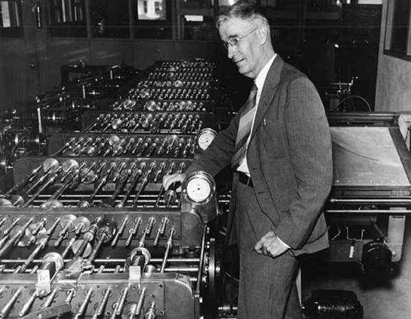

As We May Think: 75 Years Later...
By Matt Toups
Seeing this article written in 1945 accurately predicting many of the conveniences we see today thanks to science and technology is quite shocking, and with the advent of the telephone, his understanding of how technology is able to continue to connect people across the world and trasnsmit information at an even faster rate is interesting that it was less of a matter of not knowing about these concepts, but rather not having the ability to make them a reality with their current level of scientific research.
As he mentioned with the idea that even if a Pharaoh was given the blueprints to make a car, it would be nearly impossible to even make a single one, it really shows that our current level of technology and communication is the product of thousands of years of human progression slowly building on top of each other, and even with the ideas, it is not so easily achieved to jump ahead.

But even with these points, it is shocking that he could predict our futures with advanced cameras able to take photos without a second thought, past an analog world and onto one fully digital, with no need to add extra steps to capture what we see with our own eyes. Even with the ideas of a vocoder, the idea of communication with a machine to the ideas of a computer were already there.
If all of these ideas could be predicted before the technology to create them were there, it makes me wonder what our ideas of the future technology may actually come true. From the endless social discourse of ideas such as cyberpunk, to the worlds inside of computers captured in an almost fully realistic second world visible in Virtual Reality, will technology continue to advance and change in ways we predict today, or was it just a coincidence that Bush was correct? Science seems to be a very calculated subject, which leans me towards the idea that we are well aware of the technology we are slowly working towards.